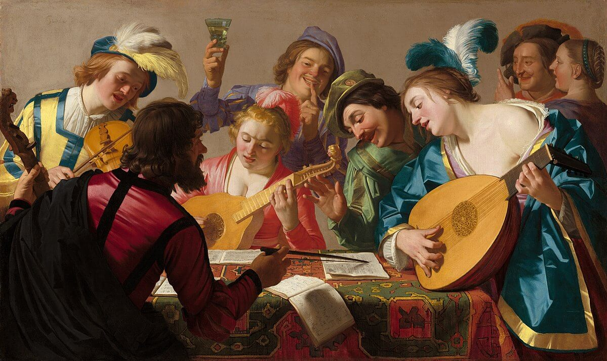
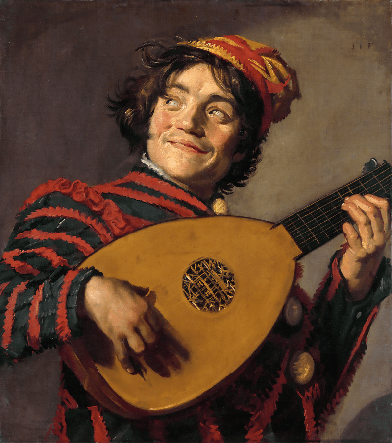
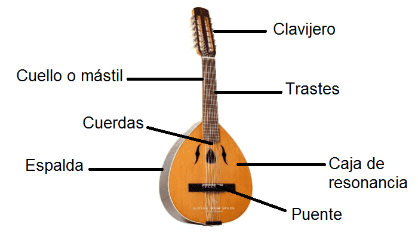

El Laúd.
El Laúd es un instrumento de cuerda punteada, posee un mástil (con o sin trastes) y un lomo redondo y profundo que encierra una cavidad hueca, generalmente con una boca o abertura en el cuerpo. Más concretamente, el término «laúd» puede referirse a un instrumento de la familia de los laúdes europeos.
El término también se refiere generalmente a cualquier instrumento de cuerda que tenga las cuerdas en un plano paralelo a la mesa de sonido (en el sistema Hornbostel-Sachs). Las cuerdas se sujetan a clavijas o postes en el extremo del mástil, que tienen algún tipo de mecanismo de giro que permite al jugador apretar la tensión de la cuerda o aflojar la tensión antes de tocar (que respectivamente suben o bajan la afinación de una cuerda), de modo que cada cuerda se afina a una afinación específica (o nota).
El laúd es punteado con una púa mientras que la otra mano presiona hacia abajo las cuerdas en el diapasón del mástil. Presionando las cuerdas en diferentes lugares del diapasón, el instrumentista puede acortar o alargar la parte de la cuerda que está vibrando, produciendo así tonos más altos o más bajos.

Historia del laúd.
En el Renacimiento, el laúd era el instrumento más popular en el mundo occidental. Se convirtió en el símbolo de la magia y el poder de la música. El laúd era el instrumento de reyes y reinas, tocando la música sublime de grandes compositores. El laúd se escuchaba en el teatro en la música incidental de las obras de Shakespeare. Y el laúd era escuchado por la gente común, tocando las melodías populares del día en los pubs y en las esquinas de las calles.
El laúd es el descendiente del Oud árabe que viajó a Europa durante la época de las Cruzadas. Desde el principio, el laúd tenía un cuerpo en forma de pera, un lomo redondeado hecho de tiras de madera separadas y un clavijero curvado. En el siglo XV se añadió un quinto curso de laúd, y a finales del siglo XV, seis cursos eran comunes en el laúd.
Fueron sintonizados a los intervalos 4º. Los lanzamientos fueron nominales, Pero el tono real variaría dependiendo del tamaño del laúd. Una instrucción de afinación común de la época era «afinar la cuerda de agudos tan alto como sea posible sin romperla, luego afinar las cuerdas restantes de acuerdo con la primera».
El olvido de la púa.
Alrededor de esta época, los músicos de laúd comenzaron a abandonar la púa y a arrancar el laúd con las yemas de los dedos. Esto hizo posible tocar dos, tres o incluso cuatro líneas de música simultáneamente. Con esta revolución en la técnica de ejecución, se reveló el potencial del laúd para la expresividad y el sombreado con delicados matices de color, y su popularidad aumentó drásticamente. El laúd se convirtió en el instrumento solista perfecto para la época, así como en un acompañamiento ideal para la voz y un miembro regular de conjuntos.
Junto con el nuevo estilo de tocar con la punta de los dedos, comenzó a aparecer una nueva forma de notación para el laúd. Esta «tablatura de laúd» era ideal para la técnica del laúd. En lugar de representar los tonos que se van a tocar, la tablatura de laúd muestra al músico de laúd dónde colocar los dedos en el diapasón para producir esos tonos. A lo largo del Renacimiento, casi toda la música de laúd fue anotada en una de las tres formas de tablatura (italiana, francesa y alemana) que aparecieron por primera vez a principios del siglo XVI.
La popularidad de laúd.
Miles de solos y canciones de laúd fueron publicados o copiados en manuscritos durante el siglo XVI. Muchos de ellos estaban destinados a los números florecientes de los laudistas aficionados, que aprendieron a tocar y a cantar con frecuencia al laúd. Grandes compositores como Francesco da Milano y John Dowland sorprendieron, conmovieron y transportaron a sus oyentes con virtuosismo y composiciones profundas. He aquí un famoso relato de las impresiones de un oyente al escuchar la actuación de Francesco da Milano.
A finales del siglo XVI, los cursos adicionales de bajo se habían vuelto comunes. Los laúdes con siete u ocho platos se convirtieron en la norma. Y a principios del siglo XVII se estableció el laúd de 10 platos, con la afinación:
El laúd Europeo.
En Europa, el laúd se refiere a un instrumento musical de cuerda pulsada popular en los siglos XVI y XVII. El laúd que fue prominente en el arte popular europeo y la música de los períodos renacentista y barroco se originó como el árabe ʿūd Este instrumento fue llevado a Europa en el siglo XIII a través de España y de los cruzados que regresaban, y todavía se toca en los países árabes.
Al igual que el ʿūd, el laúd europeo tiene un cuerpo profundo en forma de pera, un mástil con un clavijero en el dorso, y cuerdas enganchadas a un puente de tensión, o tipo guitarra, pegado al vientre del instrumento. Los laúdes europeos tienen un gran agujero sonoro circular cortado en el vientre y adornado con una rosa perforada tallada en la madera del vientre.
Tipos de laudes.
Al igual que el sitar el laúd es un instrumento poco conocido, pero aun así existen varios tipos de laúdes, conozcamos los más resaltantes…
Laúd temprano medieval.
En muchas pinturas y estatuas antiguas de las iglesias podemos encontrar representaciones del laúd medieval. Este laúd es bastante pequeño y suele tener 4 platos dobles.
Laúd medieval.
No se conserva ningún laúd medieval, pero existe un dibujo a escala de Arnout van Zwolle de alrededor de 1450. El cuerpo del laúd medieval solía ser bastante redondeado.
Vihuela.
En la España del siglo XVI el instrumento principal era la vihuela; también llamada vihuela de mano o viola a mano (en Italia). Afinada y tocada como el laúd (que era popular en el resto de Europa), la forma de la vihuela era como la de una guitarra (esbelta).
Laúd renacentista.
Después de la Edad Media, el laúd cambió lentamente de una forma de cuerpo redondeada a una alargada. El número de costillas fue de 7 a 11. La roseta siempre estaba tallada en la caja de resonancia.
Orfarión.
El orfarión es un instrumento delicado, que parece una combinación de un cittern y un laúd: la afinación del laúd y las cuerdas de metal («alambre») del cittern. De hecho, es una versión posterior (y alrededor de 3/4 del tamaño) de una bandora (ver debajo). Sólo sobrevivieron dos instrumentos originales: el orpharion de Palmer (en Copenhague) y el orpharion de Rose (en el Reino Unido).
La bandora.
La bandora (o pandora) es de hecho una versión ligeramente más grande del orpharion, y probablemente diseñada antes. Se pierde la delgada capa superior. Las cuerdas no eran de tripa, sino de metal (alambre y latón retorcido).
Los laúdes teorbales.
A medida que el laúd se hizo más popular, hubo una demanda para obtener un mejor volumen de los bajos. Las cuerdas intestinales gruesas tendían a sonar apagadas. El primer truco fue usar las cuerdas más gruesas disponibles, pero con una cuerda de octava más alta en el mismo curso. El siguiente paso era aumentar la longitud de la escala.
El chitarrón.
Para obtener un sonido de bajo realmente fuerte, el mástil de un laúd bajo a veces se extendía hasta aproximadamente el doble de la longitud de la cuerda para los bajos. El primer clavijero no se dobla hacia atrás (como en un laúd renacentista), sino que sube en línea recta.
El liuto attiorbato.
Este tipo de laudes fue diseñado a finales del siglo XVI (probablemente por Piccinini) y se utilizó principalmente para la música solista escrita por compositores italianos hasta finales del siglo XVII. Así que este modelo en particular se llama liuto attiorbato, después de la traducción italiana de «theorbe lute».
El angelique.
La angelique era un laúd (generalmente como un teorbe francés o con cuello de cisne alemán) con 16 cuerdas simples, y una afinación completamente diferente. A menudo tenía 10 cuerdas con trastes y 6 en el lado del bajo. La afinación sería similar a la afinación: D E F G A B.
El torbellino.
En Polonia y Ucrania, la idea de las cuerdas abiertas fue más allá de la angélica. Aparentemente utilizaron un laúd teorbe (generalmente como un teorbe francés o con cuello de cisne alemán) y pusieron cuerdas adicionales en la caja de resonancia, similares a las cuerdas de su bandura nativa – el instrumento de cítara que era muy popular en Ucrania. El torbellino fue utilizado desde el siglo XVII hasta principios del XIX.
El laúd barroco alemán o laúd de cuello de cisne.
Otra forma de extender las cuerdas del bajo era por una especie de cuello de cisne (lateral), generalmente con alguna curva en el medio; así que también se le llama el laúd del cuello de cisne. Al igual que en el liuto attiorbatto, todas las cuerdas de bajo provenían de una sola tuerca, y no se podían tocar en el diapasón. El número total era generalmente de 13 cursos, con 25 cuerdas.
Laúd barroco francés o laúd de doble cabeza.
Finalmente, a finales del siglo XVII (cuando descubrieron una forma de hacer cuerdas de tripa torcidas), el laúd de tamaño normal (sin el cuello extra largo) también se fabricó con 13 hileras. Debido a que la cabeza de clavija (doblada hacia atrás) tendría que ser muy larga para acomodar tantas cuerdas, a menudo se usaba un cuerpo de laúd más viejo con la cabeza de clavija en ángulo hacia atrás.
El gallicón o mandora.
El gallichón (o mandora) es una especie de lutita-bajo que fue popular durante el siglo XVIII en Alemania e Italia, al final de la era de los laúdes barrocos alemanes. Sólo unos pocos han sobrevivido. El gallichone se parece mucho a un laúd barroco grande, pero con un cuello mucho más largo.
El colascione.
Alrededor de 1600 un instrumento con el nombre de colascione (o a veces calascione) estaba en uso, principalmente en Italia. El colascione tenía un cuerpo pequeño, parecido al laúd y un cuello muy largo. Tenía 3 o 4 cuerdas (graves) y una escala de 850-900 mm (ver copias modernas en Kirchmeyr). Al parecer, este instrumento se utilizó principalmente en la Commedia dell ‘Arte.
El laúd sueco.
El laúd sueco (conocido localmente como Svenska lutan) es de hecho una mezcla de un laúd y un cittern, con cierta influencia de la guitarra inglesa. Fue desarrollado principalmente por Mathias Kraft de Estocolmo, en la segunda mitad del siglo XVIII. La producción se detuvo alrededor de 1820, pero hay un reciente renacimiento del instrumento.
El laúd de guitarra.
En Alemania, en la década de 1920, la gente empezó a cantar canciones populares antiguas y se acompañaron a sí mismos con su guitarra. Pero pensaron que un laúd sería más apropiado para esta música «antigua», así que se introdujo el laúd de la guitarra.
Partes de un laúd.
Para tocar de una manera exitosa el laúd y ser un buen laudista, debes conocer cada una de la piezas del instrumento y la función que cada una de estas cumplen. Es por ello que ahora conoceremos cada una de la partes del laúd.
Partes de un laúd.
Caja de resonancia.
Los laúdes están hechos casi totalmente de madera. La caja de resonancia es una delgada placa plana en forma de lágrima de madera resonante (típicamente abeto). En todos los laúdes la caja de resonancia tiene un solo (a veces triple) orificio de sonido decorado debajo de las cuerdas llamado la rosa.
Espalda.
La parte posterior o la cáscara se ensambla a partir de finas tiras de madera dura (arce, cerezo, ébano, palo de rosa, granate, madera y/u otros tipos de madera) llamadas listones, que se unen (con pegamento) de un lado a otro para formar un cuerpo redondeado y profundo para el instrumento.
Cuello o mástil.
El mástil está hecho de madera clara, con una chapa de madera dura (generalmente ébano) para proporcionar durabilidad al diapasón debajo de las cuerdas. A diferencia de la mayoría de los instrumentos de cuerda modernos, el diapasón del laúd está montado a ras de la parte superior.
Puente.
El puente, a veces hecho de madera de fruta, está unido a la caja de resonancia típicamente entre una quinta y una séptima parte de la longitud del vientre. No tiene un sillín separado, pero tiene agujeros perforados a los que se adhieren las cuerdas directamente. El puente está hecho de tal manera que se estrecha en altura y longitud.
Trastes.
Los trastes están hechos de bucles de tripa atados alrededor del cuello. Se deshilachan con el uso, y deben ser reemplazados de vez en cuando. Unos pocos trastes parciales de madera adicionales se adhieren al cuerpo del instrumento, para permitir que se detengan los trastes más agudos hasta una octava más alta que la cuerda abierta.
Cuerdas.
Las cuerdas se fabricaban históricamente con tripa animal, generalmente del intestino delgado de las ovejas (a veces en combinación con metal) y todavía están hechas de tripa o de un sustituto sintético, con devanados metálicos en las cuerdas de tono más bajo. Los fabricantes modernos fabrican cuerdas de tripa y nylon, y ambas son de uso común.
Cabezal.
Esta es la cabeza de la guitarra. En el cabezal se pueden ver 6 o 12 afinadores y tuercas de afinación dependiendo de si se trata de una guitarra de 6 cuerdas o de 12 cuerdas.
{kind=link}
{kind=link}